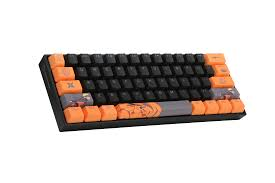
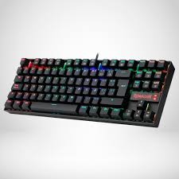

Editor's Choice
Reseña: Teclado Mecánico X90
Puntaje Final:9.5/10
Sometimos al X90 a pruebas intensas de latencia y durabilidad. Aquí te contamos si sus switches mecánicos están a la altura del gaming competitivo actual.
Lo que nos gustó:
- Latencia casi nula, ideal para juegos de ritmo rápido.
- Construcción robusta con placa de aluminio.
- Iluminación RGB muy brillante y personalizable sin software pesado.
A mejorar:
- El cable no es removible, lo que dificulta el transporte.
- Los estabilizadores podrían venir mejor lubricados de fábrica.
¿Listo para mejorar tu setup?
Compra el Teclado Mecánico X90 al mejor precio garantizado.
Especificaciones Técnicas
| Formato | Full Size (104 Teclas) |
|---|---|
| Switches | Gateron Red (Lineales) |
| Keycaps | ABS Double-shot |
| Construcción | Placa de Aluminio / Chasis ABS |
| Iluminación | RGB 16.8M Colores |
Análisis Detallado
El Teclado Mecánico X90 es un caballo de batalla diseñado para durar. Lo que más destaca de este modelo es su solidez; la placa de aluminio no solo le da un peso premium que evita que se mueva en el escritorio, sino que también elimina cualquier tipo de flexibilidad (flex) al teclear con fuerza.
Experiencia de Escritura: Los switches Gateron Red ofrecen una pulsación suave y consistente. Son ideales para gaming gracias a su corto recorrido de actuación, aunque para usuarios que vienen de teclados de membrana, pueden sentirse algo sensibles al principio.
Latencia y Rendimiento: En nuestras pruebas, el X90 mostró una latencia de entrada de solo 2ms, situándolo a la par de teclados que duplican su precio. No encontramos problemas de ghosting, incluso presionando más de 10 teclas simultáneamente.